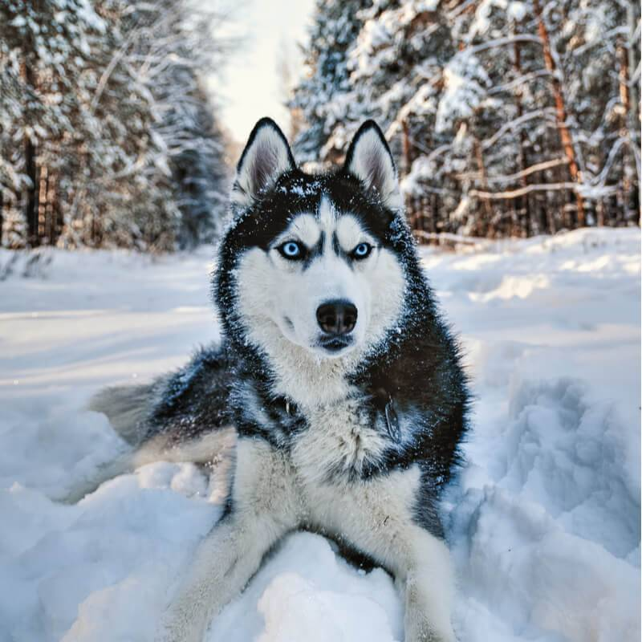

Рост - до 60 см
Вес - до 30 кг
Продолжительность жизни - от 12 до 15 лет

Современные хаски – потомки многочисленных аборигенных ездовых собак Крайнего Севера: Чукотки, Колымы, районов Охотского моря.
Когда на Аляске началась золотая лихорадка, ездовые собаки Русского Севера перекочевали туда.
Собаки в упряжках были основным средством передвижения на севере вплоть до появления снегоходов.
Всему миру известна история о хаски по кличке Того, который, будучи главным в упряжке, доставил на Аляску вакцину от дифтерии.